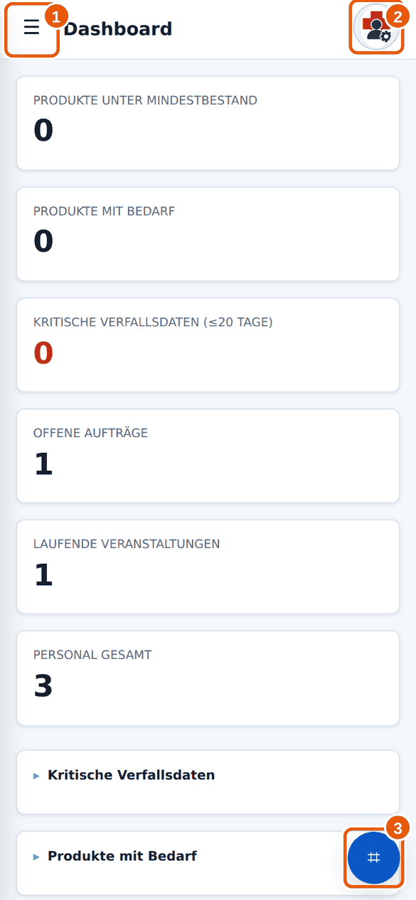

Anleitung 5.1
5.1Codes scannen
Wann brauchst du das? Du willst ein Etikett lesen, statt Namen oder Nummern zu tippen.
Kurz gesagtAuf den runden blauen Scan-Button unten rechts tippen, Kamera erlauben, Etikett in den Rahmen halten. Milan öffnet dann das passende Ziel.
→So geht’s
- Tippe auf den runden blauen Scan-Button 3 unten rechts. Er ist auf fast jeder Seite da. In manchen Listen gibt es zusätzlich Knöpfe wie Referenz scannen oder Position/Modul scannen.

3 Scan-Button. - Beim ersten Mal fragt dein Handy, ob Milan die Kamera benutzen darf. Tippe auf Erlauben.
- Das Scan-Fenster öffnet sich. Halte das Etikett so in den Rahmen 1, dass der Code ganz zu sehen ist. Ruhig halten, nicht zu nah und nicht zu weit weg.

1 Rahmen, 2 Scanner schließen, 3 Diagnose. Das Kamerabild ist hier ein Testmuster. - Sobald der Code erkannt ist, schließt sich das Fenster, und Milan öffnet das passende Ziel.
Was passiert bei welchem Etikett?
| Etikett | Ergebnis |
|---|---|
| Modul (Fach) | Milan zeigt alle Einsatzpositionen des Moduls zur Kontrolle. |
| Einsatzposition | Die Detailansicht der Position öffnet sich. |
| Produkt | Die Produktseite öffnet sich. |
| Lagerort | In einem geöffneten Buchungsformular wird das Lagerort-Feld gefüllt, sonst öffnet sich die Seite Lagerorte. |
| Veranstaltung | Die Veranstaltungsdetails öffnen sich. |
| Anderer Barcode (zum Beispiel auf einer Packung) | Milan sucht den Code und zeigt Suchergebnisse. Gibt es Treffer, wähle den passenden. |
Handscanner
Hat dein Team einen Bluetooth-Handscanner? Tippe in das gewünschte Eingabefeld, sodass der Cursor blinkt, und löse den Scanner aus. Der Code wird wie getippt eingetragen. Fragen zur Kopplung beantwortet dein Materialwart.